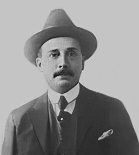
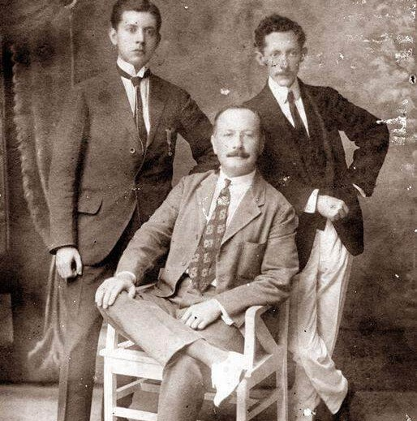
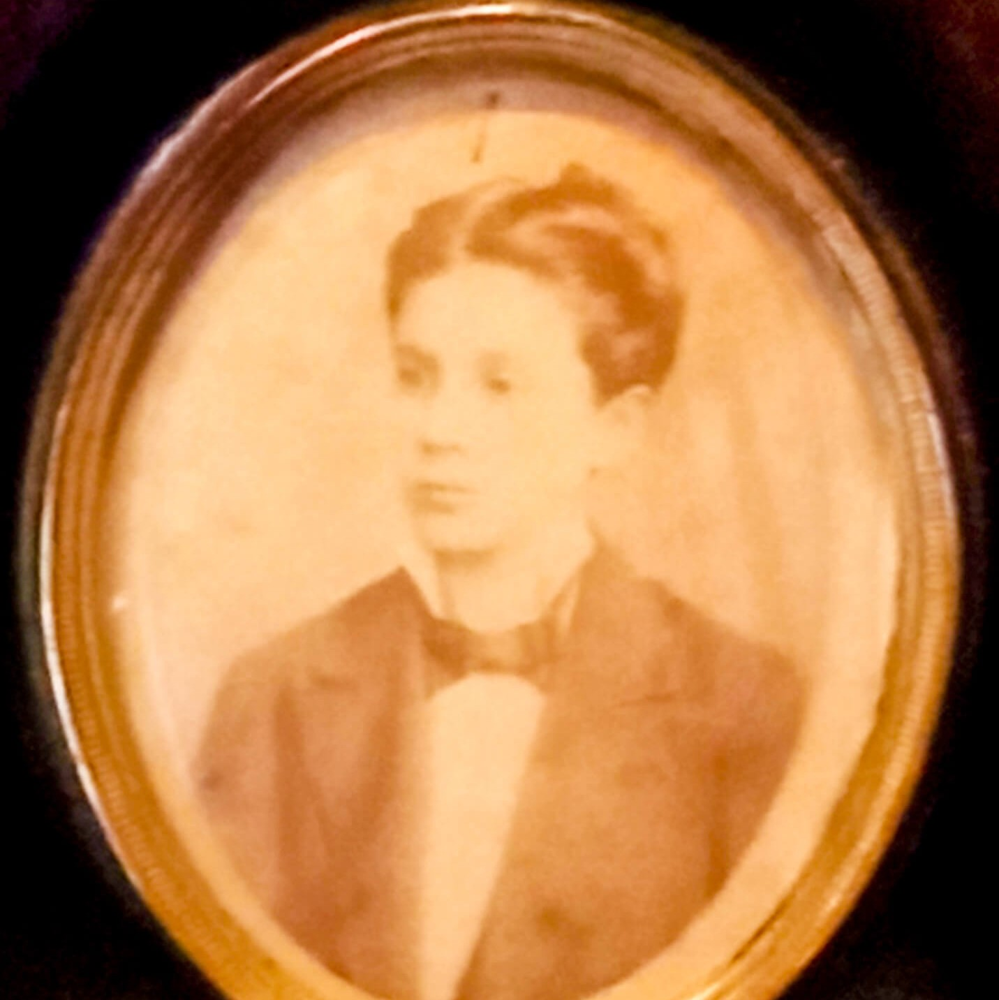
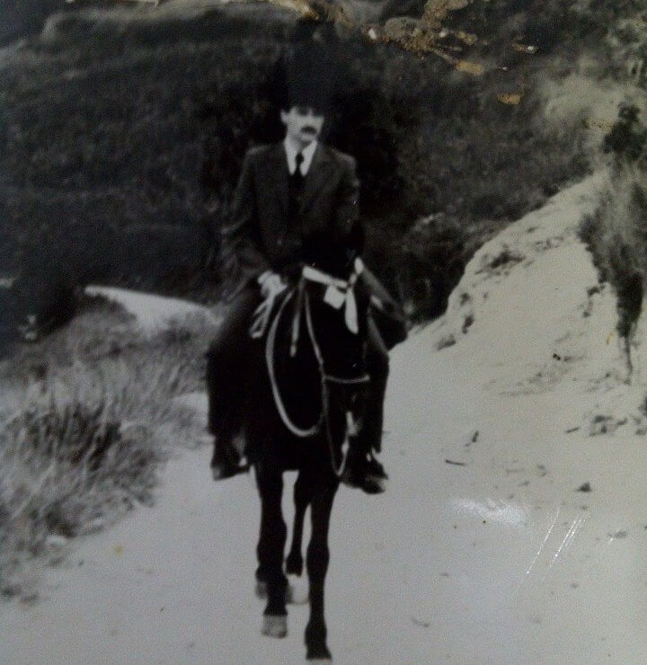
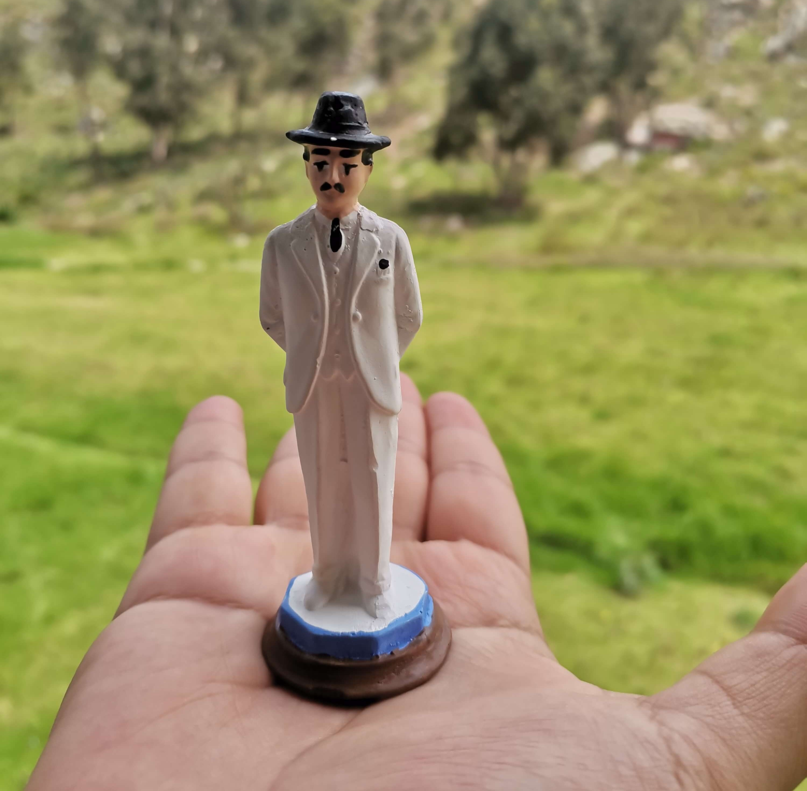

"O Médico dos Pobres"
"Vou confessar-lhe um segredo: ofereci minha vida a Deus pela paz do mundo."

José Gregório Hernández Cisneros nasceu em 26 de outubro de 1864 em Isnotú, pequena localidade nos Andes do estado Trujillo, na Venezuela. Seu pai, Benigno María Hernández Manzaneda, era comerciante — dono de uma venda, uma hospedaria e algumas terras —, homem honrado e generoso, respeitado por toda a comunidade. Sua mãe, Josefa Antonia Cisneros Mancilla, era mulher de fé profunda, caridosa e culta para os padrões da época. Por linha materna, a família guardava parentesco remoto com o Cardeal Francisco Jiménez de Cisneros, confessor de Isabel a Católica e fundador da Universidade de Alcalá de Henares, na Espanha.
José Gregório foi o segundo filho — a primeira filha morreu aos sete meses — e cresceu como o mais velho entre seis irmãos numa casa marcada por duas forças igualmente presentes: a solidez da fé católica e o amor ao conhecimento. A mãe ensinava-lhe o catecismo e as primeiras letras ainda na infância, enquanto o pai o incentivava nos estudos formais. Quando José Gregório tinha apenas oito anos, Josefa Antonia faleceu, deixando no menino uma saudade que ele levaria pelo restante da vida. "Minha mãe ensinou-me a virtude desde o berço, fez-me crescer no conhecimento de Deus e deu-me a caridade como guia", diria ele anos depois. A tia paterna, María Luisa, assumiu o papel materno com afeto e dedicação.
Isnotú era, apesar de pequena, uma comunidade religiosa e culturalmente ativa, servida por um caminho de arrieiros que ligava os Andes ao Lago de Maracaibo. O primeiro mestre de José Gregório, Pedro Celestino Sánchez, rapidamente identificou no aluno uma inteligência fora do comum e recomendou ao pai que não desperdiçasse aquelas capacidades no comércio local. A recomendação mudaria o curso de uma vida.
Aos treze anos, em 1877, José Gregório deixou Isnotú para estudar no famoso Colégio Villegas, em Caracas, onde se destacou em línguas, matemática e ciências naturais, recebendo três vezes a medalha de aplicação e conduta exemplar. Em 1882, ingressou na Faculdade de Medicina da Universidade Central da Venezuela — seu pai queria que estudasse Direito, mas o conhecendo bem, acabou por persuadi-lo a seguir a medicina, percebendo que a inclinação do filho para ajudar os outros encontraria ali seu caminho natural.
Formou-se com distinção em 29 de junho de 1888, defendendo duas teses — uma sobre a teoria da unidade da tuberculose de René Laennec, outra sobre a febre tifoide. Seu desempenho era tão notável que o governo venezuelano lhe concedeu uma bolsa para estudos na Europa. Em novembro de 1889, estava em Paris, trabalhando nos laboratórios de Mathias Duval, onde aprofundou-se em histologia, microbiologia, bacteriologia, fisiologia experimental e embriologia. Depois passou por Berlim, estudando histologia e anatomia patológica. Dominava, à época, seis idiomas: francês, inglês, alemão, italiano, português e latim.
Ao retornar à Venezuela em 1891, com apenas vinte e sete anos, trouxe consigo equipamentos científicos modernos — incluindo microscópios avançados — e fundou as primeiras cátedras universitárias de histologia, fisiologia experimental e bacteriologia do país, sendo também o primeiro a publicar um tratado de bacteriologia na Venezuela. Fundou a cadeira de Bacteriologia — a primeira das Américas. Organizou o Colégio de Médicos da Venezuela e participou da criação da Academia Nacional de Medicina. Era também músico competente, filósofo e escritor — publicou em 1906 o primeiro livro de bacteriologia do país e, em 1912, um tratado de filosofia. O ex-presidente Rafael Caldera o definiria como "um santo do povo, saído da universidade; para quem a santidade foi o exercício da ciência".
Paralelamente à carreira acadêmica brilhante, José Gregório exercia a medicina como apostolado. Atendia qualquer paciente, independentemente de sua condição social — mas os pobres tinham acesso não apenas à consulta gratuita, mas também aos medicamentos que ele pagava do próprio bolso e, quando necessário, ao dinheiro para as necessidades básicas da família do enfermo. Nunca acumulou bens. Vivia com austeridade, morava com a família e destinava boa parte dos rendimentos dos pacientes abastados ao financiamento do atendimento gratuito dos pobres.
Não separava o cuidado do corpo da atenção à alma. Exortava seus doentes a confiarem em Deus, a frequentarem os sacramentos e a rezarem. Nos casos graves, chamava o sacerdote antes mesmo de esgotar os recursos médicos. Alguns pacientes descreviam sensação de paz incomum ao ser examinados por ele; outros, de que sua simples presença aliviava a dor. Em Caracas, tornava-se difícil não encontrá-lo caminhando pelas ruas nos bairros mais pobres, com sua bolsa médica, o chapéu tirolês que se tornaria marca registrada, e o bigode impecável — a mesma figura que estamparia, décadas depois, milhões de "estampinhas" nas casas de venezuelanos de todos os estratos sociais.
Desde jovem, José Gregório sentia que sua vocação mais profunda não era apenas a medicina, mas a vida consagrada. Em 1908, com quarenta e quatro anos, licenciou-se da cátedra universitária e embarcou para a Itália, onde ingressou na Certosa di Farneta, em Lucca — um mosteiro cartuxo de grande rigor ascético. A experiência durou dez meses. Sua saúde frágil não suportou os rigores da vida cartuxa, e ele foi obrigado a retornar à Venezuela.
Alguns anos depois, em 1913, tentou novamente, desta vez ingressando no Colégio Pío Latino-Americano de Roma para se preparar para o sacerdócio. Mas o início da Primeira Guerra Mundial e, novamente, problemas de saúde forçaram seu regresso a Caracas antes que pudesse ser ordenado. Após duas tentativas frustradas, José Gregório compreendeu que seu caminho para a santidade não passava pelo claustro nem pela ordenação — mas pelo consultório, pela sala de aula e pelas ruas de Caracas. Ingressou na Ordem Franciscana Secular como terciário e continuou a viver como médico, mas com a intensidade espiritual de um religioso consagrado.
Em 1918, quando a pandemia de gripe espanhola devastou Caracas, José Gregório foi um dos poucos médicos que não recuaram. Enquanto outros temiam o contágio, ele percorreu a cidade, entrando nas casas dos mais pobres, examinando pacientes em estado grave, distribuindo medicamentos, consolando famílias. Foi, para quem sobreviveu, médico e apóstolo ao mesmo tempo.
Meses antes de morrer, confidenciou a um amigo próximo: "Vou confessar-lhe um segredo: ofereci minha vida a Deus pela paz do mundo." A frase ganhou caráter profético à luz do que viria depois — e é hoje considerada pela Igreja como expressão de uma oferta de vida heroicamente vivida.
Em 29 de junho de 1919 — dia em que completava exatamente trinta e um anos de formatura em medicina —, José Gregório acordou antes das cinco da manhã, como de costume, rezou o Angelus e foi à Missa na Igreja da Divina Pastora, onde comungou. Ao retornar, saiu novamente para comprar medicamentos para uma criança doente. Ao atravessar uma rua movimentada de Caracas, foi atropelado por um automóvel — um dos primeiros carros da cidade — e morreu quase instantaneamente, invocando o nome da Virgem Maria. Tinha cinquenta e quatro anos.
O velório foi uma comoção popular sem precedentes em Caracas. Filas interináveis de pessoas — de todas as classes sociais, raças e crenças — passaram diante do caixão durante horas. A devoção espontânea que se seguiu, nutrida por relatos de curas e graças alcançadas por sua intercessão, atravessou décadas e fronteiras. Sua "estampinha" — o homem de chapéu tirolês, bigode e maleta médica — chegou a praticamente todos os lares da Venezuela e se espalhou por toda a América Latina, décadas antes de qualquer processo oficial de beatificação.
O processo de beatificação foi longo, marcado por investigações rigorosas dos numerosos milagres atribuídos à sua intercessão. Em 30 de abril de 2021, o Papa Francisco o beatificou, reconhecendo o milagre da cura de Yaxury Solorzano — jovem venezuelana baleada na cabeça durante um protesto em 2017, dada como irrecuperável pelos médicos, que sobreviveu completamente sem sequelas após a família rezar pela intercessão de José Gregório. A canonização veio em 19 de outubro de 2025, pelo Papa Leão XIV, tornando José Gregório Hernández o primeiro santo canonizado do sexo masculino nascido na Venezuela.
Sua vida fala diretamente à América Latina de hoje: um médico que tratava gratuitamente numa região de grande desigualdade, que não separava a ciência da fé e que encontrou na medicina não uma profissão mas uma vocação ao serviço dos mais vulneráveis. Numa era em que a saúde pública permanece inacessível para milhões, a figura do médico que caminha até a casa do pobre — com a maleta, o chapéu e a oração — continua a ser um ícone de possibilidade e de esperança.
De Isnotú a Caracas — uma vida inteira a serviço dos pobres
26 Out 1864
Nasce em Isnotú, estado Trujillo, nos Andes venezuelanos, segundo filho de Benigno e Josefa Hernández.
1872 · 8 anos
Josefa Antonia falece, deixando em José Gregório uma marca espiritual profunda e o amor pela fé que ela lhe havia transmitido.
1877 · 13 anos
Ingressa no Colégio Villegas, onde se destaca em línguas, ciências e conduta. Ganha três vezes a medalha de aplicação exemplar.
29 Jun 1888
Gradua-se doutor em Ciências Médicas pela Universidade Central da Venezuela, com distinção, defendendo duas teses inovadoras.
Nov 1889
Com bolsa do governo venezuelano, aprofunda-se em histologia, bacteriologia e fisiologia nos laboratórios de Mathias Duval em Paris e depois em Berlim.
1891
Retorna à Venezuela e funda as primeiras cátedras de histologia, bacteriologia e fisiologia experimental do país, trazendo equipamentos modernos da Europa.
1908
Ingressa na Certosa di Farneta, na Itália. Após dez meses, a saúde frágil o obriga a retornar à Venezuela.
1913
Tenta ingressar no Colégio Pío Latino-Americano em Roma para o sacerdócio. A Primeira Guerra Mundial e problemas de saúde frustram o projeto.
1918
Atende incansavelmente os enfermos de Caracas durante a devastadora pandemia, recusando-se a recuar diante do risco de contágio.
29 Jun 1919
Atropelado por um automóvel em Caracas após comprar medicamentos para uma criança pobre. Morre invocando a Virgem Maria, no dia de sua formatura 31 anos antes.
30 Abr 2021
Beatificado pelo Papa Francisco, reconhecendo o milagre da cura de Yaxury Solorzano, jovem baleada na cabeça e dada como irrecuperável.
19 Out 2025
Canonizado pelo Papa Leão XIV — primeiro santo canonizado do sexo masculino nascido na Venezuela.
Os prodígios reconhecidos pela Igreja para sua beatificação e canonização
01
Venezuela · 2017
Yaxury Solorzano, jovem venezuelana, foi baleada na cabeça durante um protesto político em 2017 e dada como irrecuperável pelos médicos — os danos neurológicos eram considerados irreversíveis. Sua família, em desespero, iniciou orações fervorosas pedindo a intercessão de José Gregório Hernández. Yaxury recuperou-se completamente, sem sequelas, de forma inexplicável pelos critérios médicos. O caso foi rigorosamente investigado por peritos nomeados pela Santa Sé e reconhecido como milagre pelo Papa Francisco, abrindo caminho para a beatificação em 2021.
Aprovado em 2021 · para a Beatificação02
Venezuela · 2022–2024
Um segundo milagre médico, ocorrido na Venezuela após a beatificação de 2021, foi submetido ao exame da Dicastério para as Causas dos Santos e reconhecido como inexplicável pela medicina. Os detalhes completos do beneficiário e da natureza da cura permanecem sob sigilo pontifical até a publicação oficial — prática habitual da Santa Sé para proteger a privacidade do envolvido. O reconhecimento deste segundo milagre abriu caminho para a canonização por Leão XIV em outubro de 2025.
Aprovado em 2025 · para a CanonizaçãoImagens da vida, obra e memória de São José Gregório Hernández




Imagens utilizadas sob licença de seus respectivos autores. Créditos completos disponíveis aqui.
Documentação utilizada para a elaboração deste perfil
Homilia da Missa de Canonização
Papa Leão XIV · 19 de outubro de 2025 · Praça São Pedro
Biografia de José Gregório Hernández
Josegregoriodevenezuela.com — site oficial da causa de canonização
Saint José Gregorio Hernández — the doctor of the poor who offered his life to God
Infovaticana · Outubro 2025
Hernández Cisneros, José Gregorio
Diccionario de Historia Cultural de la Iglesia en América Latina
Senhor Jesus, Tu que passaste fazendo o bem e curando todos os que sofriam, concede-nos, pela intercessão de São José Gregório Hernández, a graça de ver em cada pessoa enferma o Teu próprio rosto — e a generosidade de servir sem calcular o preço.
Ele que ofereceu sua vida por amor a Deus e ao próximo, que tratou os pobres gratuitamente e percorreu as ruas de Caracas com a maleta e a oração, mostra-nos que a ciência e a fé não se opõem — mas se completam, quando animadas pela caridade.
Intercede por todos os médicos, enfermeiros e profissionais de saúde que servem com dedicação; pelos doentes que não têm acesso ao cuidado de que necessitam; e por todos os que, como tu, oferecem a própria vida por amor a Deus e ao próximo.
Concede-nos a graça que hoje te pedimos, e ensina-nos a descobrir, no serviço ao irmão que sofre, o caminho mais direto para o coração de Cristo. Amém.
· Para uso privado · Santo canonizado em 2025 · Primeiro santo venezuelano masculino ·